基本概念
CPU核心数和线程数的关系
正常情况下核心数：线程数=1：1；为了更好的利用CPU资源，在使用超线程技术后，核心数和线程数比值可为1：2，甚至更多。
CPU时间片轮转机制
CPU时间片轮转机制，又称RR调度，会导致上下文切换。在编写多线程程序时候，要考虑上下文切换对性能的影响。上下文切换大概5000-20000个时钟周期。上下文切换可以理解为是不同线程或进程切换的时候对上个执行的清理以及下个执行内存的分配等。
进程
进程是一次程序执行，系统资源分配和调度的最小单位，又称作业（job），任务（task）。进程内部有多个线程，会共享这个进程的资源。
线程
线程是CPU调度的最小单位，必须依赖进程存在。一个进程可能包含一个或多个线程，每个线程拥有独自的栈和寄存器。
同步
在单任务操作系统中，单任务执行是串行的，完全同步的。任务二要执行的前提是任务一执行完成
异步
在多任务操作系统中，多任务是并行（宏观上）的，异步的。任务1和任务二交替运行。系统运行效率大大提升。使用多线程也就是在使用异步
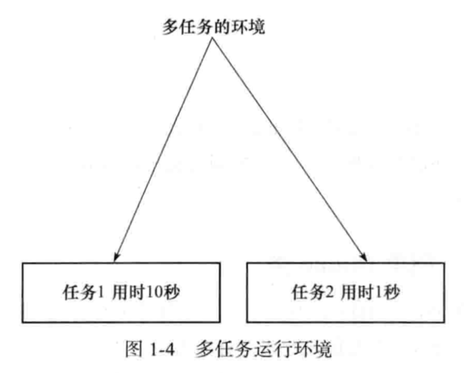
并发（Concurrent）
同一时间应对多件事情的能力，程序要设计成能处理多个同时发生的事件。（问题域）
在多任务操作系统中，可以最大限度的利用CPU的空闲时间来处理其他任务，CPU在这些任务之间不停地切换，由于切换的速度特别快，给使用者的感受就是这些任务似乎在同时运行。
eg:一条车道单位时间内能通过车辆的能力
并行（Parallel）
同一时间动手做多件事情的能力，将问题中的多个部分并行执行，来加速解决问题。（方法域）
eg:同一时间能通过多辆车的能力
高并发编程的意义和注意事项
意义
充分利用CPU资源，加快用户响应的时间，程序模块化，异步化；
问题
- 线程共享进程资源，存在冲突
- 容易导致死锁
- 启用太多的线程，有搞垮机器的可能。
初识多线程
先来看一段代码：public class Thread000 extends Thread { @Override public void run() { System.out.println("自定义线程"); } }
class Main {
public static void main(String[] args) {
Thread t = new Thread000();
t.start();
System.out.println(“主线程”);
}
}
**运行结果**主线程
自定义线程
分析以上程序的运行结果，得出以下结论：
**结论：**
多线程调用的随机性
代码运行结果并不由代码执行顺序决定。
**注意：**
1. 多线程多次调用会抛出异常
`IllegalThreadStateException`。Thread中有一个threadStatus状态，初始为0，代表一个新线程，当调用过后，再次调用值不再为零，抛出异常。
2. 执行start方法的顺序并不代表启动线程的顺序。调用start方法只是使线程处于可运行状态。
## 线程的创建
**三种创建方式**
1. 继承Thread
2. 实现Runnable，没返回值
3. 利用Callable和Future(在java.utils.concurrent 包)，有返回值
4. 利用线程池创建
``` java
/**
* 创建线程的方式
* @author lwy
* @date 2019/6/27
*/
public class CreatedThread {
/**
* 继承Thread创建线程
*/
private static class Thread001 extends Thread {
@Override
public void run() {
System.out.println("extend thread created thread");
}
}
/**
* Runnable创建线程，无返回值
*/
private static class Thread002 implements Runnable {
@Override
public void run() {
System.out.println("implement runnable created thread");
}
}
/**
* Callable创建线程，有返回值。
*/
private static class Thread003 implements Callable<String> {
@Override
public String call() throws Exception {
System.out.println("callable created thread");
return "call result";
}
}
public static void main(String[] args) throws ExecutionException, InterruptedException {
Thread001 thread001 = new Thread001();
thread001.start();
Thread002 thread002 = new Thread002();
new Thread(thread002).start();
Thread003 thread003 = new Thread003();
FutureTask<String> futureTask = new FutureTask<String>(thread003);
new Thread(futureTask).start();
System.out.println(futureTask.get());
}
}线程生命周期

New:新创建的线程，没有执行
Runnable:运行中的线程，正在执行run()方法的Java代码
Block:运行中的线程因为某些操作被阻塞而挂起
Timed Waiting:运行中的线程因为执行sleep()方法正在计时等待
Terminated：线程已终止，run（）方法执行完毕
线程安全性
实例变量不共享
当实例变量不共享时候，多线程各自处理各自的变量，这个时候没有线程安全问题
eg：耐克工厂开了几家分店，每家分店各提供100双鞋子，各家分店经营各家的，库存互不影响。/** * 实例变量不共享 * * @author lwy * @date 2018/12/14 */ public class Thread002 implements Runnable { private String name; private Integer sum = 20; public Thread002(String name) { this.name = name; } @Override public void run() { while (sum > 0) { System.out.println(this.name + "----------->" + sum); sum--; } } public static void main(String[] args) { new Thread(new Thread002("A")).start(); new Thread(new Thread002("B")).start(); } }运行结果：
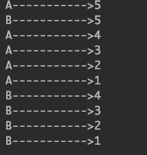
实例变量共享
当多个线程共享一个是实例变量的时候，多个线程共同操作一个变量，这个时候会出现线程安全问题。
eg：耐克工厂开了1家分店，这家分店共提供100双鞋子，多个用户去购买，多个用户共享这个店的库存。/** * 实例变量共享：非线程安全 * 通过加锁 synchronized * * @author lwy * @date 2018/12/14 */ public class Thread003 implements Runnable { private String name; private Integer sum = 10; public Thread003(String name) { this.name = name; } @Override public void run() { sum--; //1：取得sum值 //2：sum-1 //3：对sum进行赋值 System.out.println(Thread.currentThread().getName() + "--------->" + sum); } public static void main(String[] args) { Thread003 t = new Thread003("1"); new Thread(t, "A").start(); new Thread(t, "B").start(); new Thread(t, "C").start(); new Thread(t, "D").start(); new Thread(t, "E").start(); new Thread(t, "F").start(); new Thread(t, "G").start(); new Thread(t, "H").start(); new Thread(t, "I").start(); new Thread(t, "J").start(); } }运行结果：
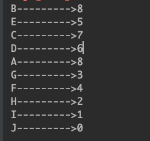
线程间的共享
当多个线程线程实例变量共享时，会遇到安全性问题。而解决这个安全性问题就要保证操作的原子性，需要通过加锁来实现。
synchronized内置锁
目的
使用synchronized可以对线程加锁。进而使线程安全。既保证共享变量原子性，有保证共享变量可见性，因为多个线程在同一时刻，只能有一个线程处于方法和同步块中，保证线程对变量的可见性和排他性
锁的是什么？
将任意对象作为监视器monitor
锁的是对象，而不是代码，任何对象都可以做锁使用，但是不要使用常量和基本类型包装类，这样会造成未知的问题。
对象锁，锁的是类的对象实例。
类锁 ，静态方法加锁。锁的是每个类的的Class对象，每个类的的Class对象在一个虚拟机中只有一个，所以类锁也只有一个。
底层实现
JVM规范没有要求具体的实现，hotspot中是通过对象头markword上两位来实现的。
可重入锁
可以防止死锁
异常和锁
程序出现异常，锁会释放，容易造成数据不一致问题。
应用
单例模式-双重校验锁
锁升级的概念
JDK早期，synchronized实现是重量级锁，直接向操作系统进行申请。后续进行改进。引入了锁升级的概念
偏向锁—自旋锁—重量级锁
偏向锁
在markword上记录这个线程ID，如果线程争用，升级为偏向锁
自旋锁
发生线程争用，现在外面等着转圈圈。要是等待十圈以后，会升级为重量级锁
重量级锁
重量级锁要直接向操作系统进行申请，因此效率比较低。
自旋锁和重量级锁的比较
| 自旋锁 | 重量级锁 |
|---|---|
| 用户态 | 内核态 |
| 占用CPU，内存资源 | |
| 适合执行时间短，线程数少 | |
| atomicXXX |
死锁
jps查看任务进程号
jstack查看堆栈信息。
jconsole查看java监视和管理控制台。
解决死锁
locks接口，使用相同的加锁顺序。
volatile关键字
虚拟机提供的轻量的同步机制，效率最高
要深入了解volatile，要理解java内存模型。
当变量被volatile修饰，每次使用的时候，都去主内存读取，每次设值的时候，都将该变量值刷回主内存。
不是安全的
当设值的时候不是原子操作的时候，会出现同步问题。
适用于只有一个线程写，多个线程读的场景，因为它只能确保可见性。不能确保原子性
ThreadLocal
map<Thread,T>
用空间换取线程的安全性。
确保线程使用自己的那份拷贝
占用内存。
常用方法
返回当前线程
Thread.currentThread()
返回线程名称
getName()当前线程是否处于活动状态
isAlive()线程休眠
Thread.sleep()：在指定的毫秒数内让当前‘正在执行的’线程休眠.该线程为Thread.currentThread()取得线程的唯一标识
getId()/**
* currentThread()：获取当前线程
* sleep():在指定的毫秒数内让当前"正在执行的线程休眠"（暂停执行），这个正在执行的线程是指currentThread()返回的线程。
* getId():取得线程的唯一标识
* yield():放弃当前CPU资源，将它让给其他的任务去占用cpu执行时间，但放弃时间不确定。将线程从运行转到可运行状态，但是下个时间片，该线程依然有可能被再次选中运行。
* setPriority()：设置线程的优先级。
*
* @author lwy
* @date 2018/12/17
*/
public class ThreadMethod {
private static int i = 5;
public static void main(String[] args) {
Thread t = new Thread(() -> {
System.out.println(" i = " + (i--));
}, "AA");
System.out.println("the begin of alive thread ----> " + t.isAlive());
t.start();
System.out.println("threadName ---> " + Thread.currentThread().getName() + " and " + t.getName());
System.out.println("the count of active threads ------> " + Thread.activeCount());
System.out.println("the current of thread ----> " + Thread.currentThread().getName());
System.out.println("the id of current thread ----> " + Thread.currentThread().getId());
System.out.println("the middle of alive thread ----> " + t.isAlive());
System.out.println("the id of current thread ----> " + t.getId());
try {
Thread.sleep(100);
} catch (InterruptedException e) {
e.printStackTrace();
}
System.out.println("the end of alive thread ----> " + t.isAlive());
}
}
停止/中断线程
stop():
强制停止线程，该方法是过时的，不安全的。
interrupt()：中断一个线程:
调用一个线程的interrupt()方法中断一个线程，并不是强硬关闭线程，只是跟这个线程打了一个招呼，将线程的中断标志位置设为true，线程是否中断，由线程本身决定。
eg:在执行一个长时间任务的时候，有时候需要中断，从网络下载大文件，不想下载，下载中点击取消，这时，程序就要中断下载线程的执行。
判断线程是否处于停止状态
Thread.interrupted():
static方法interrupted() 判定当前线程是否处于中断状态，同时中断标志位改为false（测试当前线程是否已经中断，线程的中断状态由该方法清除。意思就是，连续两次调用，第二次肯定是false。该方法有清除状态的功能）。
isInterruped():测试线程thread对象是否已经是中断状态，但不清楚状态标志。
方法里如果抛出InterruptedException，线程的中断标志位会被复位成false，如果确实是需要中断线程，要求我们自己在catch语句块里再次调用interrupt()
/**
* 线程的停止:在线程处理完任务之前停掉正在做的操作，也就是放弃当前的操作
* <p>
* Thread.stop()（已过时）,虽然这个方法能达到预期效果，但是这个方法是不安全的，最好不要使用
* interrupt() :这个方法不会终止一个正在运行中的线程，还需要加入一个判断
* <p>
* 线程终止：
* 1：使用退出标志，使线程正常退出。run方法运行完线程自动终止。
* 2：使用stop方法强行终止线程。（方法已过时）,虽然这个方法能达到预期效果，但是这个方法是不安全的，最好不要使用
* 3：使用interrupt中断线程。
* <p>
* 判断线程是否终止
* interrupted():静态方法。测试当前线程是否已经中断，线程的中断状态由该方法清除。意思就是，连续两次调用，第二次肯定是false。该方法有清除状态的功能
* isInterrupted():测试线程thread对象是否已经是中断，但不清楚状态标志。
*
* @author lwy
* @date 2018/12/17
*/
public class ThreadStop {
public static void main(String[] args) {
Thread t = new Thread(() -> {
for (int i = 0; i < 5000; i++) {
System.out.println("current thread name " + Thread.currentThread().getName() + " i = " + (i + 1));
}
}, "AA");
t.start();
// t.stop();
t.interrupt();
Thread.currentThread().interrupt();
// System.out.println("the alive of thread " + t.isAlive());
System.out.println(Thread.currentThread().getName() + " thread 是否终止 " + Thread.interrupted());
System.out.println(Thread.currentThread().getName() + " thread 是否终止 " + Thread.interrupted());
System.out.println(t.getName() + " thread 是否终止 " + t.isInterrupted());
System.out.println(t.getName() + " thread 是否终止 " + t.isInterrupted());
}
}运行结果
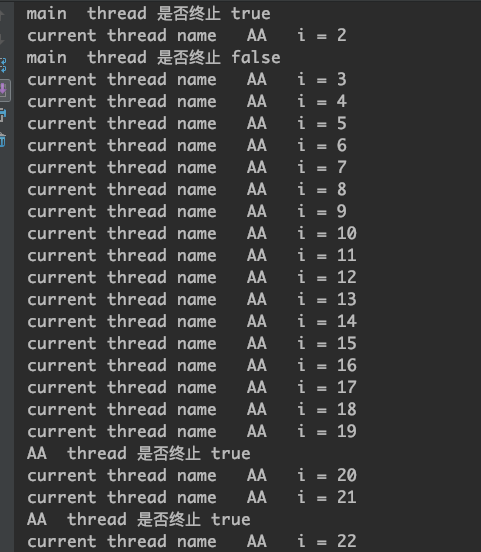
暂停线程
暂时将线程暂停，暂停线程意味着还可以恢复线程。
使用suspend()和resume()暂停和恢复线程【过时方法，慎用】
暂停和恢复线程，两个过时方法。
/**
* suspend（挂起，线程不释放资源，容易造成死锁）和resume方法的调用(过时方法)
* 缺点
* 独占：使用不当，极易造成公共的同步对象的独占，使其他线程无法访问公共同步对象。
* 不同步：因线程的暂停导致数据不同步
*
* @author lwy
* @date 2018/12/17
*/
public class ThreadStopAndRecover extends Thread {
private long i = 0;
public long getI() {
return i;
}
public void setI(long i) {
this.i = i;
}
@Override
public void run() {
while (true) {
i++;
}
}
public static void main(String[] args) throws InterruptedException {
ThreadStopAndRecover t = new ThreadStopAndRecover();
t.start();
Thread.sleep(5000);
//A段
t.suspend();
System.out.println("A = " + System.currentTimeMillis() + " i = " + t.getI());
Thread.sleep(5000);
System.out.println("A = " + System.currentTimeMillis() + " i = " + t.getI());
//B段
t.resume();
Thread.sleep(5000);
//C段
t.suspend();
System.out.println("B = " + System.currentTimeMillis() + " i = " + t.getI());
Thread.sleep(5000);
System.out.println("B = " + System.currentTimeMillis() + " i = " + t.getI());
}
}运行结果
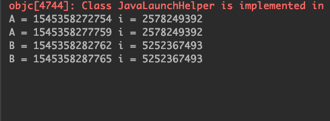
使用suspend()和resume()暂停线程缺点
- 造成公共对象的独占，其他线程无法访问公共对象。
- 使用suspend和resume容易造成数据不同步的情况。
public class ThreadStopAndRecover extends Thread {
synchronized public void printString() {
System.out.println("begin");
if (currentThread().getName().equals("A")) {
System.out.println("A 线程永远suspend了！");
currentThread().suspend();
}
System.out.println("end");
}
public static void main(String[] args) throws InterruptedException {
ThreadStopAndRecover st = new ThreadStopAndRecover();
new Thread(() -> {
st.printString();
}, "A").start();
sleep(1000);
new Thread(() -> {
System.out.println("线程2启动了，但进不了printString()方法");
st.printString();
System.out.println("因为printString()方法被A线程锁定，并永远suspend暂停了");
}).start();
}
}运行结果
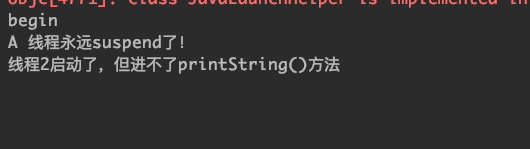
使用yield()方法
简述：yield()方法是暂时放弃CPU资源，使其回到runnable待运行状态，至于何时重新运行，不受外界控制。取决于CPU。
注意：
yield方法和sleep方法的区别。
sleep方法是线程暂时休眠，回到阻塞池里面，要等到时间到达或者被唤醒，才会回到待运行状态。
yield方法是当前让出cpu资源，回到等待队列里面。下次执行还有可能是自己，使用yield会延长当前线程执行所耗费的时间。
public class ThreadYield {
public static void main(String[] args) {
Thread t = new Thread(() -> {
long beginTime = System.currentTimeMillis();
int count = 0;
for (int i = 0; i < 1000000; i++) {
//Thread.yield();
count = count + (i + 1);
}
long endTime = System.currentTimeMillis();
System.out.println(" 用时 " + (endTime - beginTime) + " 毫秒 ");
});
t.start();
}
}当不使用yield方法的时候结果为
当使用yield方法的时候结果为
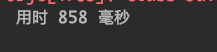
发现yield()方法将CPU让给其他资源导致速度变慢
线程的终止
定义
在线程处理完一个任务之前，停掉当前的工作，也就是放弃当前的操作。
方法
- 线程自然终止：run方法运行完线程自动终止或抛出未处理异常。
- 使用退出标志，使线程正常退出。
- 使用stop方法强行终止线程。（方法已过时）,虽然这个方法能达到预期效果，但是这个方法是过时的，不安全的，会导致线程资源不能正确释放。最好不要使用
- suspend()、resume()已过时，不建议使用。suspend会导致死锁。
- 一般使用interrupt()中断线程。但是要结合条件使用
理解中断
intertup()方法只是将该线程中断标志设置为true,并不是立即中断该线程。不安全的终止线程
stop()方法暴力停止 （失效方法）慎用
注意：调用stop()方法会抛出ThreadDeath异常。但不需要显示捕获
stop()方法已失效，强制让线程停止可能会导致一些清理工作难以完成，对被锁对象进行了解锁，会造成数据不一致问题。
public class ThreadStop003 {
public static void main(String[] args) {
Thread t = new Thread(() -> {
try {
while (true) {
int i = 1;
System.out.println(i);
i++;
Thread.currentThread().stop();
}
} catch (ThreadDeath td) {
System.out.println("thread death");
td.printStackTrace();
}
});
t.start();
}
}运行结果
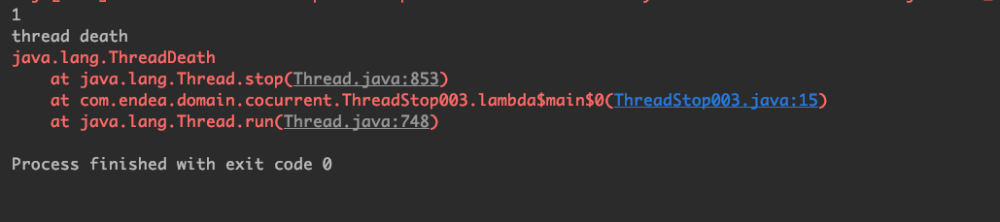
stop()导致的在使用synchronized下不一致问题
public class LoginServlet {
private static String userNameRef = "C";
private static String passwordRef = "CC";
synchronized public static void doPost(String userName, String password) {
try {
userNameRef = userName;
Thread.sleep(100000);
passwordRef = password;
System.out.println(Thread.currentThread().getName() + " userName = " + userNameRef + " passwordRef = " + passwordRef);
} catch (InterruptedException e) {
e.printStackTrace();
}
}
public static void main(String[] args) {
try {
Thread t = new Thread(() -> {
doPost("a", "aa");
}, "A");
t.start();
Thread.sleep(1000);
t.stop();
System.out.println(userNameRef + "--->" + passwordRef);
} catch (InterruptedException e) {
e.printStackTrace();
}
}
}运行结果
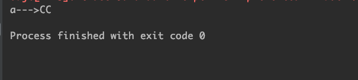
如何安全的终止线程
使用interrupt()方法，但是必须要结合其他方式。
异常法停止线程
- 直接抛出异常。
- 先sleep,后interrupt抛出异常。
注意：
- 抛出interrupt异常之后，会将线程中断位重新置为false。因此要正确的终止线程，要在catch里面重新调用interrupt()方法终止线程
public class ThreadStop {
public static void main(String[] args) {
Thread t = new Thread(() -> {
try {
for (int i = 0; i < 500000; i++) {
if (Thread.currentThread().isInterrupted()) {
System.out.println("已经是停止状态了");
throw new InterruptedException();
// break;
}
System.out.println("current thread name " + Thread.currentThread().getName() + " i = " + (i + 1));
}
System.out.println("真的停止了吗？假的");
} catch (InterruptedException e) {
//抛出异常，会将中断位重新置为false
this.interrupt();
System.out.println("interrupted exception ");
e.printStackTrace();
}
}, "AA");
t.start();
try {
Thread.sleep(1000);
} catch (InterruptedException e) {
e.printStackTrace();
}
t.interrupt();
System.out.println(t.getName() + " thread 是否终止 " + t.isInterrupted());
System.out.println(t.getName() + " thread 是否终止 " + t.isInterrupted());
}
}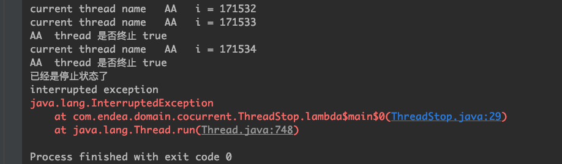
先sleep后interrupt，在沉睡中终止
public class ThreadStop001 extends Thread {
@Override
public void run() {
try {
System.out.println("run begin");
Thread.sleep(200000);
System.out.println("run end");
} catch (InterruptedException e) {
System.out.println("在沉睡中被停止 + " + this.isInterrupted());
e.printStackTrace();
}
}
}
class Run {
public static void main(String[] args) {
try {
ThreadStop001 t = new ThreadStop001();
Thread.sleep(1000);
t.start();
t.interrupt();
} catch (InterruptedException e) {
//抛出异常，会将中断位重新置为false
this.interrupt();
System.out.println("先sleep,后interrupt，进入catch main catch");
e.printStackTrace();
}
}
}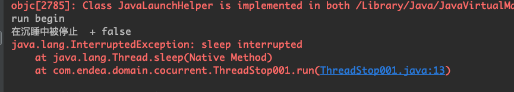
先interrupt，后sleep
public class ThreadStop001 extends Thread {
@Override
public void run() {
try {
for (int i = 0; i < 500000; i++) {
System.out.println("current thread name " + Thread.currentThread().getName() + " i = " + (i + 1));
}
Thread.sleep(200000);
System.out.println("真的停止了吗？假的");
} catch (InterruptedException e) {
//抛出异常，会将中断位重新置为false
this.interrupt();
System.out.println("先停止，遇到sleep,进入catch。interrupted exception ");
e.printStackTrace();
}
}
}
class Run {
public static void main(String[] args) {
ThreadStop001 t = new ThreadStop001();
t.start();
t.interrupt();
}
}
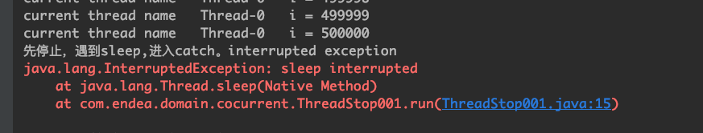
使用inturrupt和return停止线程
public class ThreadStop002 extends Thread {
@Override
public void run() {
while (true) {
if (this.isInterrupted()) {
System.out.println("停止了 ！！");
return;
}
System.out.println("timer = " + System.currentTimeMillis());
}
}
public static void main(String[] args) throws InterruptedException {
ThreadStop002 t = new ThreadStop002();
t.start();
Thread.sleep(2000);
t.interrupt();
}
}运行结果
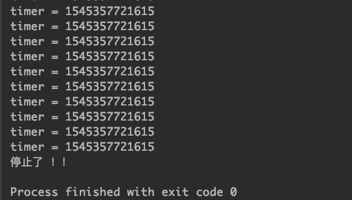
不使用return，也可以这样。
public class ThreadEnd {
private static class UseThread extends Thread {
@Override
public void run() {
while (!isInterrupted()) {
System.out.println(Thread.currentThread().getName() + " is run ");
}
}
}
public static void main(String[] args) throws InterruptedException {
UseThread t = new UseThread();
t.start();
Thread.sleep(20);
t.interrupt();
}
}使用设立标志位中断线程
利用volatile的可见性
package com.lendea.juc.c_0001;
import java.util.concurrent.TimeUnit;
/**
* @author lwy
* @version V1.0
* @Description: 使用标志位中断线程，httpclient连接池
* @date 2020/8/31 10:00 下午
*/
public class InterruptThread02 {
public static void main(String[] args) {
Thread01 t1 = new Thread01();
t1.start();
try {
Thread.sleep(TimeUnit.SECONDS.toMillis(1));
} catch (InterruptedException e) {
e.printStackTrace();
}
t1.flag = Boolean.FALSE;
}
private static class Thread01 extends Thread {
private volatile boolean flag = true;
@Override
public void run() {
int n = 0;
while (flag) {
System.out.println(n++);
}
}
}
}线程的优先级
定义
在操作系统中，线程区分优先级，优先级较高的线程获得的CPU资源更多。也就是CPU优先执行优先级较高线程的任务
设置线程有助于帮助“线程规划器”确定在下一次选择哪一个线程来确定执行
方法：
setPriority()方法
线程优先级分为1-10这十个优先级，要是超过这个范围，会抛出illeagalArgumentException异常
缺省为5，但线程的优先级不可靠，不建议作为线程开发时候的手段
JDK中预置了三个线程优先级
/**
* The minimum priority that a thread can have.
*/
public final static int MIN_PRIORITY = 1;
/**
* The default priority that is assigned to a thread.
*/
public final static int NORM_PRIORITY = 5;
/**
* The maximum priority that a thread can have.
*/
public final static int MAX_PRIORITY = 10;线程优先级的特性
1. 线程优先级的继承特性
A线程启动B线程，则B线程和A线程的优先级一致
public class ThreadPriority {
public static void main(String[] args) throws InterruptedException {
Thread t1 = new Thread(() -> {
System.out.println(Thread.currentThread().getName() + "current thread priority is " + Thread.currentThread().getPriority());
});
System.out.println("main thread priority " + Thread.currentThread().getPriority());
t1.start();
Thread.sleep(500);
Thread.currentThread().setPriority(7);
System.out.println("main thread priority " + Thread.currentThread().getPriority());
Thread t2 = new Thread(() -> {
System.out.println(Thread.currentThread().getName() + "current thread priority is " + Thread.currentThread().getPriority());
});
t2.start();
}
}运行结果
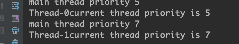
2. 优先级具有规则性
3. 优先级具有随机性
高优先级的线程并不会全部执行完后，才会曲折性低优先级的。只是整体优先等级高，优先完成的概率高
守护线程
守护线程：为其他线程服务的线程。
分类
线程分两种，一种是自定义线程，一种是守护线程。守护线程起到一个保姆的作用，java中典型的守护线程是垃圾回收线程。也就是GC(垃圾回收器)。
setDeamon(boolean on):标记一个线程是否属于守护线程
注意：
守护线程和主线程共死，finally不能保证一定执行；
所有非守护线程都执行完毕后，无论是否有守护线程，虚拟机都会退出；
守护线程不能持有需要关闭的资源（如打开文件等）；
/** * @author lwy * @version V1.0 * @Description: 守护线程 * @date 2020/8/31 10:40 下午 */ public class DaemonThread { public static void main(String[] args) { Thread01 t1 = new Thread01(); //注释这一行查看效果 t1.setDaemon(Boolean.TRUE); t1.start(); try { Thread.sleep(TimeUnit.SECONDS.toMillis(3)); } catch (InterruptedException e) { e.printStackTrace(); } System.out.println("main thread end;"); } private static class Thread01 extends Thread { @Override public void run() { int n = 0; while (true) { System.out.println(n++); try { sleep(TimeUnit.SECONDS.toMillis(1)); } catch (InterruptedException e) { e.printStackTrace(); } } } }
}
``` java
/**
* 守护线程和守护线程的finally
* 守护线程和主线程同死。因此有可能导致finally语句块不能够执行
*
* @author lwy
* @date 2019/7/4
*/
public class DeamonThread {
private static class UseThread extends Thread {
@Override
public void run() {
try {
while (!isInterrupted()) {
System.out.println(Thread.currentThread().getName() + " i am a thread");
}
System.out.println(Thread.currentThread().getName() + " interrupt flag is " + isInterrupted());
} finally {
System.out.println("thread finally");
}
}
}
public static void main(String[] args) throws InterruptedException {
UseThread u = new UseThread();
u.setDaemon(true);
u.start();
Thread.sleep(5);
// u.interrupt();
}
}常见问题
- run()和start()方法的区别
run方法就是普通对象的普通方法，调用它只是在执行普通的方法，不会产生新的线程。只有调用了start()后，Java才会将线程对象和操作系统中实际的线程进行映射，再来执行run方法。